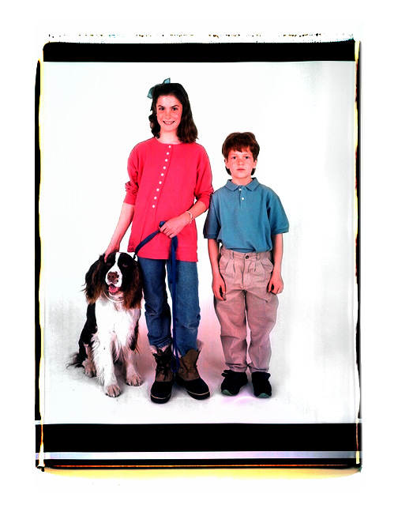
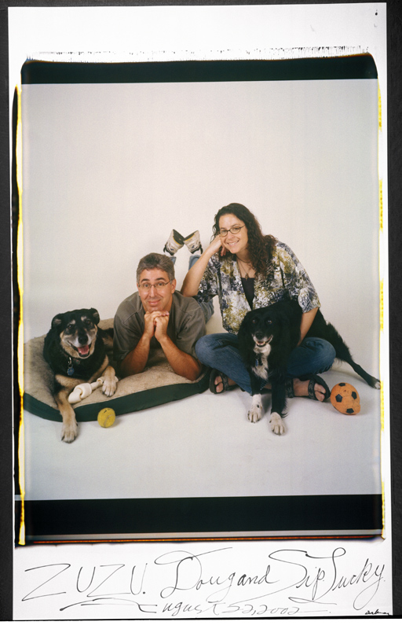
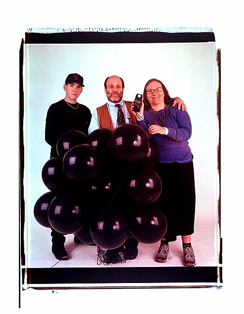

 When my clients come off the elevator and I greet them in the hallway of my basement studio, I am reminded of a quote I found by Andre Breton: " Seeing you for the first time, I recognized you without the slightest hesitation." Instinctively, I find something familiar about the people I photograph, something recognizable, something that makes me like them. And they too on some level find something familiar about me that helps them relax and be comfortable with themselves and allow themselves to "be" in front of my camera and myself. There has to be some trace of the familiar for both me and my subject.
{kind=link}
My studio, two rooms across the hall from each other in the basement of the building, is secluded . When I work on Saturdays and Sundays, the feeling of the space is cozy and womblike. I have covered the corridor walls with portraits to give clients a sense of the playfulness and the congeniality of my work. They are buoyed by seeing how other people's sessions turned out and they get a few last-minute hints. They always look for people they may know--and most of the time they find someone. Even if they don't know anyone, everyone looks familiar (partly because all the portraits are framed in grey-sided UV plexiglass boxes designed by Van Wood and partly because they are all " signed" with the people's first names in my own scrawl in India ink.) Even though there is no suggestion of place and everyone is standing on the same white paper, it is easy to place these people and to imagine the places they inhabit.
 I do everything I can to make my subjects comfortable. By now I have certain rituals. I open up the camera and show them the rolls of negative a nd receiving paper. I show them the carpenters' tape measure that indicates how far out the black cloth bellows are. I show them the bicycle chain that holds the pod tray. I explain how the pods of chemicals drop between the rollers when I hit a button. I have the client ceremoniously pull down the white seamless background paper with me. I lay down a line of white tape on which the client will stand. (It's a comfortable space, about eight feet wide by two feet deep, warmed by the modelling lights, and about four feet from me and my camera.) I test the lights, holding my light meter in front of me as if I were saying a prayer. I operate the camera myself so we are alone. I try to have all my antennae working and to be like a sponge, absorbing their anxieties. Of course, to them I looklike I don't have a care in the world. I look like an affectionate aunt caught in her kitchen looking for her favorite knife and brandishing her favorite dish towel. I pad around in stocking feet and always wear the same kitchen apron with two pockets for my focuser. I kneel on a green spongy garden pad when I guide the film out of the camera. I peel it on a work table loaded with tools and covered with chemical stains. But my authority over my work is total.
{kind=link}
 I want my people to look like they just stepped off the sidewalk into my studio, like they just dropped in. Familiar clothes, favorite clothes provide the gesture AND the characteristic habit. We know who we are and how we feel in familiar clothes. The clothes on the hanger look like us even when we're not in them. The portrait begins in their closet.
{kind=link}
I remind them that they should bring favored objects that symbolize where they are in their lives and what is important to them. It's always better to have too many props than to realize that the quintessential item was left at home. Props have run the gamut from rowing oars, diplomas, soccer balls, computers, books and records, a globe, skis, guitars, and stuffed animals to the Sunday night pizza. If they have pets--and the pets are part of the family and beloved by all (not always the case)--I encourage them to bring them. So I have done a teenage boy and his parakeet, an eight year old girl and her turtle, and a family with its bunny--as well as the usual assortment of cats and dogs. The act of thinking about props, of what to wear, of what defines them helps my subjects get ready for their session.
Find Elsa's Books


Please change your links and bookmarks to elsadorfman.com!
Elsa thanks her cybergodmother, photo.net, her longtime, most generous host at furfly.com, and her current web host Mike Sisk at TCP/IP Ranch, LLC.
Copyright 1970-2010 © Elsa Dorfman.
Inquiries for the use of Elsa's content are welcomed!
Please
read these guidelines.
Contact
Elsa Dorfman via email or send Website Feedback to her webmaster.